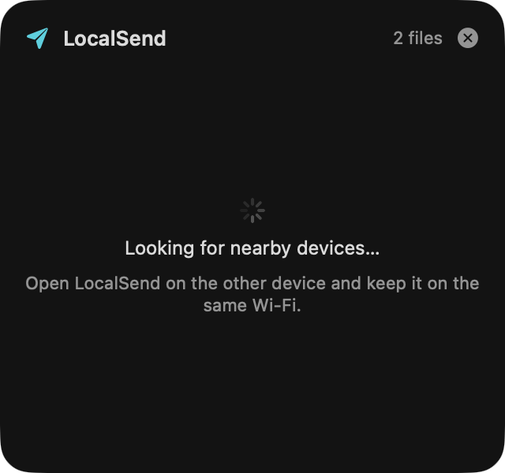
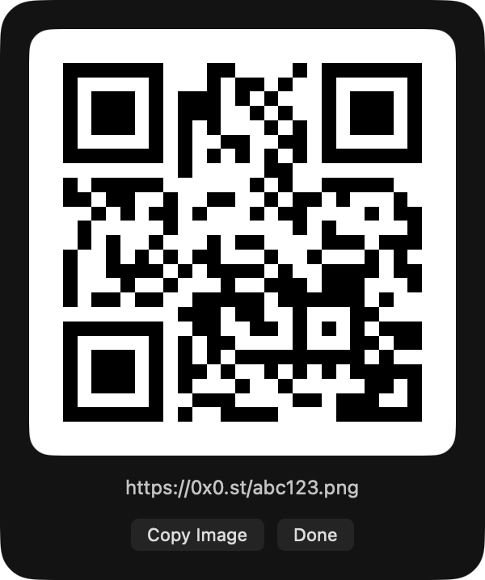
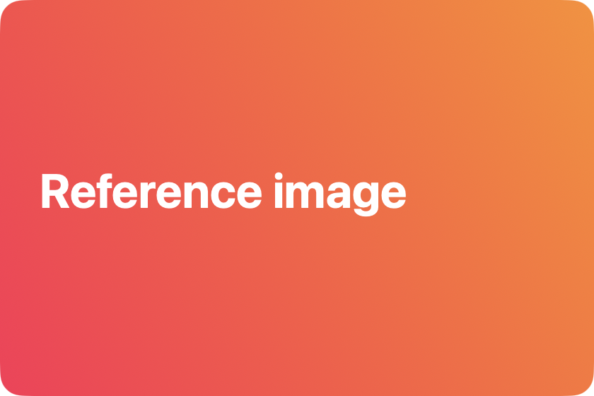
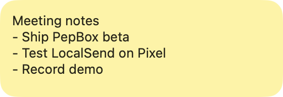
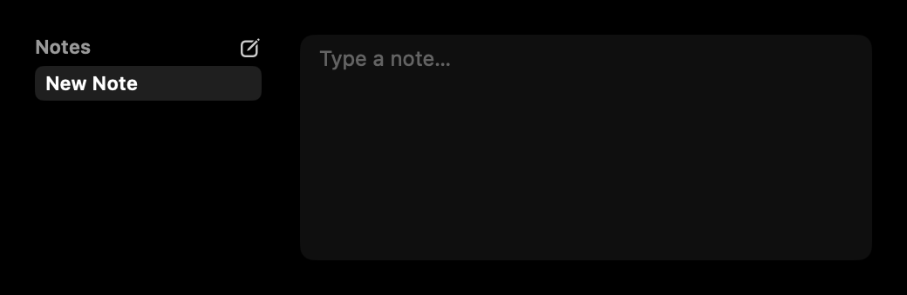

Everything PepBox does, in one place.
Most of it sits quietly at the top of your screen until you need it. Here is what is there.
Drop files on the notch. Do something with them.
Drag anything toward the top of the screen and the shelf opens to catch it. Files stay there until you send, use or clear them.
Send buttons on the island
- AirDrop
- Private AirDrop
- LocalSend
- Messages
- Quickshare
- To Phone
- ZIP
- Copy
- Notes
LocalSend sends to Android, Windows and Linux devices on your Wi-Fi with no cloud in between. To Phone uploads the file and shows a QR code any phone can scan.
Shelf Tools
Right-click a file on the shelf:
- Images: resize, rotate, flip, black and white
- Video: make a GIF
- PDF: merge PDFs, turn images into a PDF, convert PDF pages
- Privacy: remove photo location data
- Convert: audio and video formats
- Check: SHA-256 checksum

A clipboard that keeps up with you.
Press ⌥Space to open your history. Pick an item and press Return to paste it, or ⌥Return to paste it as plain text.
- Stacks: select several items and they are numbered in the order you picked them. Paste them together with a separator of your choice.
- Paste Queue: ⌃⌥C collects copies, ⌃⌥V pastes them one by one.
- Jump: ⌘1–9 pastes the first nine items.
- Filter by kind: text, links, images, files.
Right-click any item
- Merge
- Delete After
- Save as Snippet
- Float on Screen
- Show QR
- Paste Transformed

Show QR turns a copied link into a code your phone can scan.
One bar for apps, files and answers.
Press ⌃⌥Space. Type an app or file name to open it, or ask for something. Answers copy with Return. Type ? for the full cheat sheet.
- Math, units and currency:
(3+2)^2,5 km to mi,$20 to eur - Time:
time in tokyo,days until dec 25,stopwatch - Timers and reminders:
timer 10m pizza - Calendar, notes and tasks:
event lunch tomorrow 1pm,todo call Sam - Your Mac:
port 3000,battery,lock,quit Slack - Screen tools:
ocr,pick color,qr hello - Developer:
sha256 hi,chmod 755,http 404 - Generators:
:fire,uuid,password 24
Status beside the notch.
Things that are running get a small indicator on either side of the notch, so you can check on them without switching windows.
- Timers and stopwatch from Quick Search, with a chime when they finish
- Meetings in Zoom, Teams and Meet
- Downloads from your browser
- Agents working, done, or waiting on you
- Eye breaks every 20 minutes
- Paste Queue while it collects copies
Cleaner system indicators.
PepBox replaces the big macOS overlays with small ones that grow out of the notch.
- Now playing with album art and controls
- Synced lyrics while a song plays (opt-in)
- Volume in 7% steps, a little finer than the default
- Brightness, battery and AirPods connection
- Lock screen indicator
Type a shortcut, get the full text.
Type a trigger like ;date in any app and PepBox replaces it. Make your own, or right-click clipboard text and choose Save as Snippet.
Snippets can include placeholders that fill in when you type them:
| Placeholder | Becomes |
|---|---|
{date} | Today's date |
{time} | The current time |
{weekday} | The day of the week |
{year} | The current year |
{clipboard} | Whatever you last copied |
{uuid} | A fresh random UUID |
Keep a reference in view.
Pin an image or a bit of text so it floats above your other windows. Handy for a design reference, a checklist, or the numbers you are typing in somewhere else.
Right-click a clipboard item or a shelf file and choose Float on Screen.


Copy text out of anything on screen.
Drag a box over a screenshot, a video, a slide or a locked PDF and PepBox copies the text inside it. Recognition happens on your Mac. Start it from Quick Search by typing ocr.
Your coding agents, at a glance.
Running Claude Code or Codex? PepBox shows each session's progress beside the notch and in a panel on the shelf.
- Every session with what it is doing and how many tool calls and edits it has made
- Needs you appears when an agent is waiting for an answer or a permission
- Chimes when an agent finishes or needs you (you can turn this off)

Little tools, right under the notch.
Notes, Pomodoro, System Stats, Shortcuts, Up Next, Obsidian and more can live on the shelf. Turn them on from Extensions.
